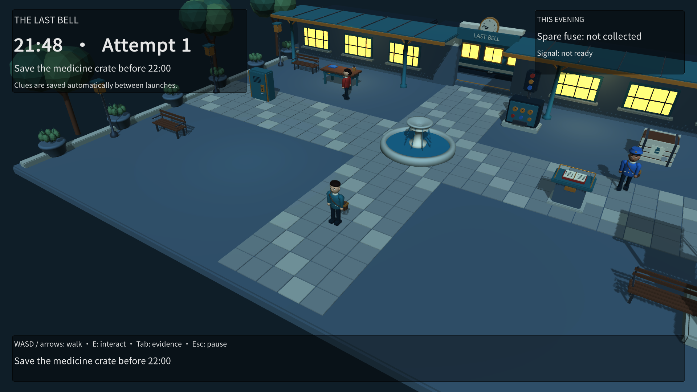
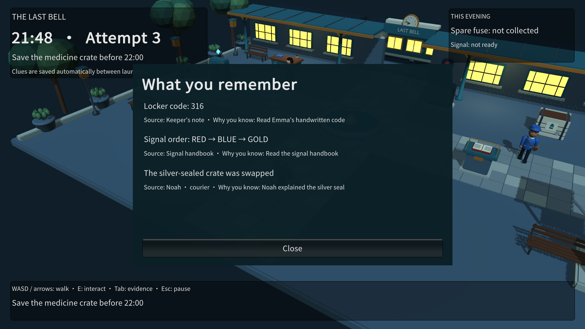

Repeat the evening. Keep what matters.
A Unity toolkit for time loops, NPC schedules and character knowledge. Reset the world, retain a clue and explain why the next attempt can end differently.
A second chance
First loop
The courier leaves at 5 seconds. A note appears at 6 seconds. The player reads code 2417.
- 2417 The clue stays with the player
Next loop
The world returns to its starting state. The player still knows 2417 and opens the gate before the courier leaves.
The Last Bell
Play a complete three-loop mystery included with LoopKit.

A station full of second chances
Walk through the courtyard, follow the characters’ schedules and put remembered clues to use.

The world resets. The clue stays.
The journal shows what you have learned. Persistent clues survive new loops and game restarts; physical items reset with the world.
Build the loop around your game
- Clock and schedule
- Author events with UnityEvent, use real or game time, pause with the game and evaluate exact positions after a time skip.
- Knowledge with a source
- One checkbox saves permanent clues between game launches. Show objects by observer knowledge and inspect the source and reason of each clue.
- Verified reset
- Cancel old work, wait for it to finish, restore participants and check for residual state.
Open the included scene
Import the .unitypackage into Assets, or install the UPM distribution and import The Last Bell through Package Manager → Samples.
In Unity 6000.5.7f1 with URP 17.5, open Prepared/TheLastBell.unity inside the sample folder and enter Play mode. Prepared/Prefabs contains 12 reusable model prefabs.
For Built-in Render Pipeline, choose Tools → Strange Euphoria XR → LoopKit → Create last bell scene to generate a scene with Standard materials. The generator is also available in URP.
The LoopKit core does not require URP. Build your own loop by adding a clock, assigning a loop definition and connecting scene actions in the Inspector.
Included in the package
Inspector authoring, observer-filtered tables, full sources and reasons, automatic permanent memory, Transform routes, and two importable puzzles. Tool UI, guides and The Last Bell gameplay support English, Russian, Spanish and Simplified Chinese.
Requirements and boundaries
Requires Unity 6000.5.7f1. Durable memory restores a new loop, not an arbitrary saved scene. Custom game state needs participants. Destroyed objects are not recreated automatically. The Last Bell includes original Blender art and four gameplay languages. A second chance is a small primitive-based example.
Optional integrations
Optional NavMesh routes use Navigation 2.x. Read-only MCP diagnostics target exactly Unity Pipeline 0.8.0-exp.1. These integrations are excluded when their matching packages are absent. No controlling server is included in Player.